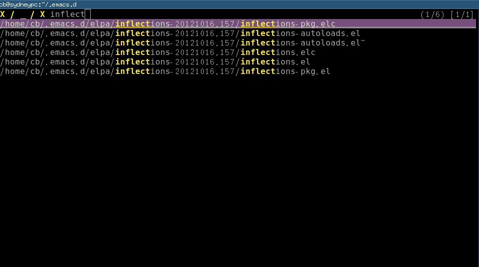
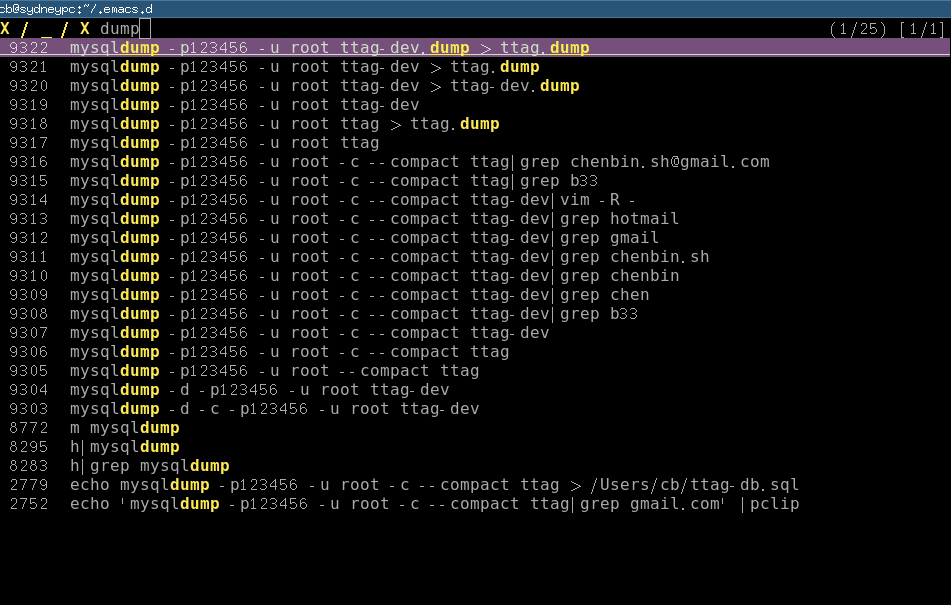
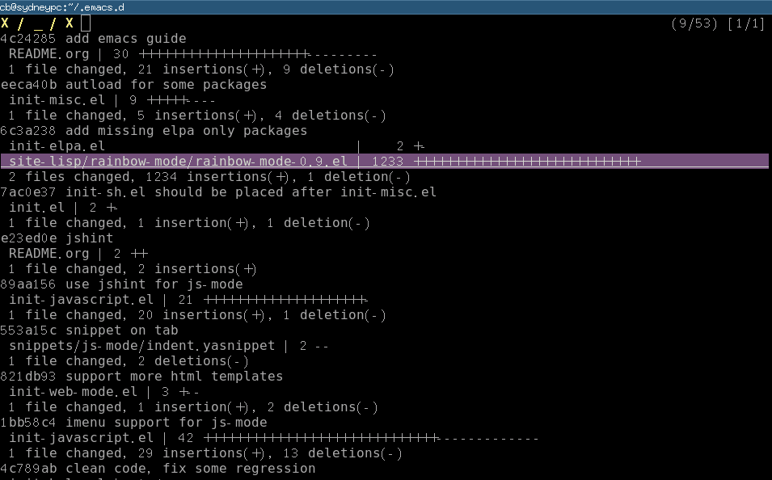

Why Emacs is a better editor, part two
If you are impatient, jump to the "Quick Start" and paste my setup into your ~/.emacs. That's all you need to do!
No extra setup needed! Then keep using your js2-mode happily, as if nothing happened. ;)
1 Problem
In my previous article Why Emacs is better editor - a case study for javascript developer, I proved that Emacs is better than Sublime Text.
So for this so-called "Goto Symbol" feature, Emacs wins.
It's because we use a plugin js2-mode. It's actually a javascript parser which creates the symbols from AST.
But in real world, regular expression is better, sometimes.
In modern MVC javascript frameworks (Angular, for example), you will meet below code,
app.controller('MyController', function ($scope, $http) {
// ...
});
As you can see, using regular expression to extract the string "MyController" is more versatile and simpler.
2 Solution
My latest contribution to js2-mode solves this problem perfectly. It combines the powers of AST and regular expression.
The js2-mode will integrate this feature soon. I will notify you when next version is ready.
Let's cut off the boring technical details and see the demo,
For a simple hello.js with below content,
function helloworld() {
console.log('hello called');
}
function test() {
console.log('test called');
}
app.controller('MyController', function ($scope, $http) {
console.log('MyController registered');
var that = this;
$scope.test1 = function() {
console.log('$scope.test called');
};
$scope.hello = function() {
console.log('$scope.hello called');
};
$scope.fn1 = function () {
function test() {
console.log('hello world');
};
console.log('hello');
};
});
Emacs:

Sublime3 (build 3047):

Please note Emacs displays two functions with the same name "test" correctly!
BTW, my previous "Why Emacs is better" article got many feedbacks from Sublime users.
One feedback is that my comparison is not fair because I'm comparing Emacs plugin with naked Sublime. Though I did some research before writing the article, I could be wrong. Please enlighten me if you know such Sublime plugins.
Another valuable feedback is that native Sublime provides better experience out of the box for junior developers. I admit that's a good point. But Emacs provides many awesome choices out of the box if junior guys start from setups of the masters (like Steven Purcell).
Sublime users also argue that Sublime3 uses Python. Python is a better programming language. I'm qualified to answer this question because I wrote some large commercial Python application when I worked in Kodak R&D. First version I used was v2.2. So I've got about 10 years experience in Python. And I write lots of Emacs Lisp code these days. My opinion is that both languages are good enough as DSL for text editors. In Python, you can use OO. In Emacs Lisp, you can treat function as object and there are Macros and Advising. Both languages have enough widgets to shoot yourself in the foot. Python is surely newbie-friendly. But number of newbies doesn't matter in high-end rival.
3 Quick Start
I'm still discussing with the js2-mode maintainer Dmitry Gutov about the best way to merge my patch.
Dmitry Gutov updated the algorithm to parse the imenu items by walking the AST instead. It's better than my REGEX hacking because AST could show the context of the function.
But my patch is still useful for extract strings from modern JS framework, as I've shown you in Angular example. I'm just updating my pull request to be compatible with the new AST walk algorithm.
In the meantime, you can paste below code into your ~/.emacs before the patch is officially merged.
;; below regex list could be used in both js-mode and js2-mode
(setq javascript-common-imenu-regex-list
'(("Controller" "\.controller( *'\\([^']+\\)" 1)
("Filter" "\.filter( *'\\([^']+\\)" 1)
("Factory" "\.factory( *'\\([^']+\\)" 1)
("Service" "\.service( *'\\([^']+\\)" 1)
("Directive" "\.directive( *'\\([^']+\\)" 1)
("Event" "\.\$on( *'\\([^']+\\)" 1)
("Config" "\.config( *function *( *\\([^\)]+\\)" 1)
("Config" "\.config( *\\[ *'\\([^']+\\)" 1)
("OnChange" " *\$('\\([^']*\\)').*\.change *( *function" 1)
("OnClick" " *\$('\\([^']*\\)').*\.click *( *function" 1)
("Watch" "\.\$watch( *'\\([^']+\\)" 1)
("Function" "function\\s-+\\([^ ]+\\)(" 1)
("Function" " \\([^ ]+\\)\\s-*=\\s-*function\\s-*(" 1)))
;; {{ patching imenu in js2-mode
(setq js2-imenu-extra-generic-expression javascript-common-imenu-regex-list)
(defvar js2-imenu-original-item-lines nil
"List of line infomration of original imenu items.")
(defun js2-imenu--get-line-start-end (pos)
(let (b e)
(save-excursion
(goto-char pos)
(setq b (line-beginning-position))
(setq e (line-end-position)))
(list b e)))
(defun js2-imenu--get-pos (item)
(let (val)
(cond
((integerp item)
(setq val item))
((markerp item)
(setq val (marker-position item))))
val))
(defun js2-imenu--get-extra-item-pos (item)
(let (val)
(cond
((integerp item)
(setq val item))
((markerp item)
(setq val (marker-position item)))
;; plist
((and (listp item) (listp (cdr item)))
(setq val (js2-imenu--get-extra-item-pos (cadr item))))
;; alist
((and (listp item) (not (listp (cdr item))))
(setq val (js2-imenu--get-extra-item-pos (cdr item)))))
val))
(defun js2-imenu--extract-line-info (item)
"Recursively parse the original imenu items created by js2-mode.
The line numbers of items will be extracted."
(let (val)
(if item
(cond
;; Marker or line number
((setq val (js2-imenu--get-pos item))
(push (js2-imenu--get-line-start-end val)
js2-imenu-original-item-lines))
;; The item is Alist, example: (hello . 163)
((and (listp item) (not (listp (cdr item))))
(setq val (js2-imenu--get-pos (cdr item)))
(if val (push (js2-imenu--get-line-start-end val)
js2-imenu-original-item-lines)))
;; The item is a Plist
((and (listp item) (listp (cdr item)))
(js2-imenu--extract-line-info (cadr item))
(js2-imenu--extract-line-info (cdr item)))
;;Error handling
(t (message "Impossible to here! item=%s" item)
)))
))
(defun js2-imenu--item-exist (pos lines)
"Try to detect does POS belong to some LINE"
(let (rlt)
(dolist (line lines)
(if (and (< pos (cadr line)) (>= pos (car line)))
(setq rlt t)))
rlt))
(defun js2-imenu--is-item-already-created (item)
(unless (js2-imenu--item-exist
(js2-imenu--get-extra-item-pos item)
js2-imenu-original-item-lines)
item))
(defun js2-imenu--check-single-item (r)
(cond
((and (listp (cdr r)))
(let (new-types)
(setq new-types
(delq nil (mapcar 'js2-imenu--is-item-already-created (cdr r))))
(if new-types (setcdr r (delq nil new-types))
(setq r nil))))
(t (if (js2-imenu--item-exist (js2-imenu--get-extra-item-pos r)
js2-imenu-original-item-lines)
(setq r nil))))
r)
(defun js2-imenu--remove-duplicate-items (extra-rlt)
(delq nil (mapcar 'js2-imenu--check-single-item extra-rlt)))
(defun js2-imenu--merge-imenu-items (rlt extra-rlt)
"RLT contains imenu items created from AST.
EXTRA-RLT contains items parsed with simple regex.
Merge RLT and EXTRA-RLT, items in RLT has *higher* priority."
;; Clear the lines.
(set (make-variable-buffer-local 'js2-imenu-original-item-lines) nil)
;; Analyze the original imenu items created from AST,
;; I only care about line number.
(dolist (item rlt)
(js2-imenu--extract-line-info item))
;; @see https://gist.github.com/redguardtoo/558ea0133daa72010b73#file-hello-js
;; EXTRA-RLT sample:
;; ((function ("hello" . #<marker 63>) ("bye" . #<marker 128>))
;; (controller ("MyController" . #<marker 128))
;; (hellworld . #<marker 161>))
(setq extra-rlt (js2-imenu--remove-duplicate-items extra-rlt))
(append rlt extra-rlt))
(eval-after-load 'js2-mode
'(progn
(defadvice js2-mode-create-imenu-index (around my-js2-mode-create-imenu-index activate)
(let (extra-rlt)
ad-do-it
(setq extra-rlt
(save-excursion
(imenu--generic-function js2-imenu-extra-generic-expression)))
(setq ad-return-value (js2-imenu--merge-imenu-items ad-return-value extra-rlt))
ad-return-value))
))
;; }}
My Emacs skill is improved after 3 years
This is my note on useful commands/keybindings to memorize three years ago.
Most are obsolete because I'm more skillful now.
Basically I use fewer but more powerful plugins. I write Emacs lisp if there is no suitable plugin.
- Three years ago, column edit,
C-x r t yourstring RET (See "How to do select column then do editing in GNU Emacs ?"")
Now I use Evil
- Three years ago, save current position to register and jump to the position,
C-r SPC to save, C-j to jump (better-registers.el required)
Now Evil.
- Three years ago, save frame configuration to register,
C-r f (better-registers.el required)
Now workgroups2.
- Three year ago, (un)comment line,
M-; (qiang-comment-dwim-line required)
- Three years ago for visiting the next/previous error message after compiling,
"M-g M-n" or "M-g M-p"
I'm still using it.
- Three years ago, find-tag/pop-tag-mark
"M-." and "M-*"
Now Evil
- Three years ago, grep current work directory only or all sub-directories
M-x lgrep/rgrep
Now grep in shell plus percol
- Three years ago, visit multiple tags table
M-x visit-tags-table
hack tags-table-list directly might be simpler.
- Three years ago, set countdown timer
M-x org-timer-set-timer, C-c C-x ;
Now I don't push myself with the timer thing.
- Three years ago, mark subtree in org-mode
M-x org-mark-subtree
It was used to select the text to post to my blog.
Now I use org2nikola. The org-mark-subtree is hardcoded into org2nikola.
How to accept the github pull request efficiently
I use keyboard only in order to maximize my productivity.
1 Preparation
2 Step 1
Open pull request page at github.com, click the link "command line".
In a real world project, I rarely accept a pull request without some modification. So I usually avoid pressing the big green button "merge pull request" on that page.
In the "command line" page, github is kind enough to list the command lines to "check out a new branch and test the changes" from the pull request. The command lines are like:
git checkout -b her-master master
git pull git@github.com:her/myproject.git master
I have installed a Greasemonkey user script NinjaWebCoder in order to use keyboard to copy those command lines from the browser into clipboard. Then I paste the command lines into terminal.
3 Step 2
I open the code file with Emacs.
There is an Emacs addon called git-gutter. I use its command "git-gutter:next-hunk" to move the cursor to the next "diff hunk".
Let me explain what's the diff hunk. When you edit some code under git's control, you code has some difference with the HEAD version. Every difference corresponds to the pair of a file name and a line number. That file-name-line-number pair is defined as a "diff hunk".
Now comes the most important part of this article. Since version 0.71, git-gutter added a new command "git-gutter:set-start-version". If I "git-gutter:set-start-revision" to the "HEAD^" version. I can jump to "diff hunk" of the difference between "HEAD" and "HEAD^".
In short, I can review the latest commit and change the code in one step.
4 Done
After review and code change, the remaining book-keeping things (git-commit/git-merge/git-push) are easy.
Every operation in previous steps is optimized with some shortcut. For example, in shell I use alias "g" instead of full command line "git status".
Please enlighten me if the work flow could be improved.
How to do the file navigation efficiently
CREATED:
UPDATED:
The solutin is based on the ideas of top geeks. I only did the implementation.
Mendel Cooper provided the original design in Advanced Bash-Scripting Guide. Masafumi Oyamada (AKA mooz) added the missing piece by creating percol.
1 Problem
How to find full path of a file by fuzz search?
The path should be shared easily to other application like Emacs.
2 Installation
2.1 Step 1, Install percol
Download the package and extract it. Place the sub-directory named "percol/" into the directory "~/bin". Rename the program "percol" in sub-directory "bin" into "percol.py". Put the percol.py also into "~/bin".
2.2 Step 2, Insert below code into ~/.bashrc:
[ $(uname -s | grep -c CYGWIN) -eq 1 ] && OS_NAME="CYGWIN" || OS_NAME=`uname -s`
function pclip() {
if [ $OS_NAME == CYGWIN ]; then
putclip $@;
elif [ $OS_NAME == Darwin ]; then
pbcopy $@;
else
if [ -x /usr/bin/xsel ]; then
xsel -ib $@;
else
if [ -x /usr/bin/xclip ]; then
xclip -selection c $@;
else
echo "Neither xsel or xclip is installed!"
fi
fi
fi
}
# search the file and pop up dialog, then put the full path in clipboard
function baseff()
{
local fullpath=$*
local filename=${fullpath##*/} # remove "/" from the beginning
filename=${filename##*./} # remove ".../" from the beginning
# Only the filename without path is needed
# filename should be reasonable
local cli=`find . -not -iwholename '*/vendor/*' -not -iwholename '*/bower_components/*' -not -iwholename '*/node_modules/*' -not -iwholename '*/target/*' -not -iwholename '*.svn*' -not -iwholename '*.git*' -not -iwholename '*.sass-cache*' -not -iwholename '*.hg*' -type f -path '*'${filename}'*' -print | ~/bin/percol.py`
# convert relative path to full path
echo $(cd $(dirname $cli); pwd)/$(basename $cli)
}
function ff()
{
local cli=`baseff $*`
#echo ${cli} | sed 's%^'${HOME}'%~%'
#echo -n ${cli} | sed 's%^'${HOME}'%~%' | pclip
echo ${cli}
echo -n ${cli} | pclip
}
function cf()
{
local cli=`baseff $*`
local p=`cygpath -w $cli`
echo ${p}
echo -n ${p} | pclip;
}
`cf` is similar to `ff`. It will output Windows path under cygwin.
3 Usage
Type "ff partials-of-file-path" in shell. A filter window popups. You can filter and scroll down/up to select one file. The full path will be copied into system clipboard automatically (under Linux, either xsel or xclip are required for clipboard access).
The paritials-of-file-path could contain wildcard character.
For example, for "/home/cb/projs/web-portal/app/styles/bootstrap/main.css", you can type either of below command:
ff .../grunt-docs/*bootstrap*css
ff web-port*ma*css
ff styles
Here is the screen shot when I type "ff el" in my ~/.emacs.d: 
You will notice that I input the string "inflect" to filter the result.
I can scroll up/down (press Ctrl-P or Ctrl-N) to select the exact file.
In Emacs community, people try to embed a file explorer into Emacs (Sr speedbar, for example). This solution may make embedded file explorer unnecessary.
4 Advanced usage
More examples follow.
4.1 Search the bash history.
Code to insert ~/.bashrc:
function h () {
# reverse history, pick up one line, remove new line characters and put it into clipboard
if [ -z "$1" ]; then
history | sed '1!G;h;$!d' | ~/bin/percol.py | sed -n 's/^ *[0-9][0-9]* *\(.*\)$/\1/p'| tr -d '\n' | pclip
else
history | grep "$1" | sed '1!G;h;$!d' | ~/bin/percol.py | sed -n 's/^ *[0-9][0-9]* *\(.*\)$/\1/p'| tr -d '\n' | pclip
fi
}
Though grep is quick enough for me, it can be replaced by Silver Searcher.
Screenshot: 
4.2 Select a file in git commit
Code to insert ~/.bashrc:
function glsf () {
local str=`git --no-pager log --oneline --stat $* | ~/bin/percol.py`
if [[ $str =~ ^[[:space:]]*([a-z0-9A-Z_.\/-]*).*$ ]]; then
echo -n ${BASH_REMATCH[1]} |pclip;
echo ${BASH_REMATCH[1]}
fi
}
Screenshot: 
5 Summary
The key idea is that I have full freedom to get job done in any way. Emacs is nothing more than a tool to help me achieve more power and more freedom. For example, I find mooz's percol because I like his Emacs plugin js2-mode and I want to check his other works.
Install multiple versions of Emacs into $HOME directory from source
CREATED:
UPDATED:
Here is the script install-emacs.sh,
#!/bin/bash
[ -z "$EMACS_VERSION" ] && echo "Usage: EMACS_VERSION=24.3 install-emacs.sh" && exit 1
[ -z "$EMACS_URL" ] && EMACS_URL="http://mirror.aarnet.edu.au/pub/gnu/emacs/"
# I've assign 12G memory to /tmp as ramdisk
[ -z "$EMACS_TMP" ] && EMACS_TMP="/tmp"
# configure: WARNING: unrecognized options: --without-gtk3, --without-aqua, --without-alsa, --without-aqua
echo "curl $EMACS_URL/emacs-$EMACS_VERSION.tar.gz"
curl $EMACS_URL/emacs-$EMACS_VERSION.tar.gz | tar xvz -C $EMACS_TMP
# @see http://wiki.gentoo.org/wiki/Project:Emacs/GNU_Emacs_developer_guide
# @see http://packages.gentoo.org/package/app-editors/emacs for info on Gentoo Linux
# --without-gtk and --without-gtk3 is optional
if [[ $EUID -ne 0 ]]; then
echo "Installing Emacs as normal user ..."
cd $EMACS_TMP/emacs-$EMACS_VERSION;mkdir -p $HOME/myemacs/$EMACS_VERSION;rm -rf $HOME/myemacs/$EMACS_VERSION/*;./configure --prefix=$HOME/myemacs/$EMACS_VERSION --without-x --without-dbus --without-sound && make && make install
rm -rf $EMACS_TMP/emacs-$EMACS_VERSION
echo "Emacs $EMACS_VERSION installed!"
else
echo "Installing Emacs as sudoer ..."
cd $EMACS_TMP/emacs-$EMACS_VERSION;./configure --without-x --without-dbus --without-sound && make && make install
echo "Emacs $EMACS_VERSION installed! Please remove $EMACS_TMP/emacs-$EMACS_VERSION"
fi
Usage of the script is as simple as running EMACS_VERSION=24.3 ./install-emacs
The emacs will be installed into the directory ~/myemacs/24.3.
How to manage the file path in big project
It's not good practice to use relative path in big project.
Reasons:
- If file B refer to file A with "../A". Then B's position in the project *CANNOT be changed. Or else its reference to A will be wrong.
- Relative path is not intuitive when debugging.
- If the dependency is complex. Figure out the right path is mission impossible. For example, file A refer to file B with "./a/../../B" and file B refer to file C "../../b/C".
So you should ALWAYS use the absolute path.
Absolute path is tedious to type and not portable.
It could be improved a little bit be use an environment variable to replace the common prefix of the full path.
For example, we can replace absolute path "/home/cb/projects/app1/src/test.c" with "$TTAGROOT/src/test.c", if the value of environment variable TTAGROOT is "/home/cb/projects/app1".
Insert below code into ~/.bashrc so TTAGROOT value is set when you logged into bash:
export TTAGROOT="/home/cb/projects/app1"
In you script to do the real job, you could make TTAGROOT optional and still use your full path happily. It's just one bash liner.
Here is a sample file named test.sh:
#!/bin/bash
[ -z "$TTAGROOT" ] && TTAGROOT="hard-coded-full-path"
echo "TTAGROOT = $TTAGROOT"
You could use test.sh without $TTAGROOT. Or you can set up default value of $TTAGROOT in ~/.bashrc as I already mentioned.
Or you can override the TTAGROOT value when you executing "test.sh":
TTAGROOT="hello" ./test.sh
BTW, don't abuse this technique. Set one environment variable for the root directory of project is enough.
C/C++/Java code indentation in Emacs
1 Problem
There are two styles when insert curly braces in C like languages.
Style 1:
if(true) {
printf("hello world\n");
}
Style 2:
if(true)
{
printf("hello world\n");
}
Whatever style I use, I expect Emacs will properly handle the indentation for me.
In "Style 1", when I press ENTER key after "{" at first line, I expect the new line will indent four spaces.
In "Style 2", when I press ENTER key after ")" at first line, I expect the new line will NOT indent.
2 Solution
Insert below code into ~/.emacs:
(defun fix-c-indent-offset-according-to-syntax-context (key val)
;; remove the old element
(setq c-offsets-alist (delq (assoc key c-offsets-alist) c-offsets-alist))
;; new value
(add-to-list 'c-offsets-alist '(key . val)))
(add-hook 'c-mode-common-hook
(lambda ()
(when (derived-mode-p 'c-mode 'c++-mode 'java-mode)
;; indent
(fix-c-indent-offset-according-to-syntax-context 'substatement 0)
(fix-c-indent-offset-according-to-syntax-context 'func-decl-cont 0))
))
That's it.
3 Explanation
When you press the ENTER key, the function c-indent-line will be called.
That function will do some simple syntax analysis and decide current syntactic context..
It will use that syntactic context to look up a global variable c-offsets-alist and decide how many spaces the new line will indent.
For example, the context substatement corresponds to the code like below:
if(true) // press ENTER here
And the context func-decl-cont corresponds to:
void fn () //press ENTER here
4 Technical details
When you press ENTER key, the new line will be inserted. Then the function indent-according-to-mode will always be called
indent-according-to-mode will call function object indent-line-function if it's not nil.
In C/C++/Java, that object is actually c-indent-line.
c-indent-line is defined in /usr/share/emacs/24.3/lisp/progmodes/cc-cmds.el (I use Emacs 24.3 on Gentoo Linux).
In that function, just below the code line:
(setq c-syntactic-context (c-guess-basic-syntax))
You can insert log code as below:
(message "c-syntactic-context=%s" c-syntactic-context)
You will know the current syntactic context when you press ENTER key through the output of log code.
EmacsWiki says you can run command "c-set-offset", whose hot key is "C-x C-o", in order to "see the syntax at point". As I tested, it does not work as expected. My way may seem a little bit intrusive but is reliable.
For example, the context statement-cont corresponds to the use case like this:
int a=3, // press ENTER here
Please note syntax analysis in c-indent-line is turned on if and only if the global flag c-syntactic-indentation is true.
Thanks for chengyi for reporting the issue and suggesting the fix.
BTW, EmacsWiki has a section to discuss the indenting in C. You may not need it if you have read this article and can read the Emacs lisp code.
What's AOP in Java
Yesterday in a interview I was asked what's AOP and how to use it. The two interviewers
I was wordless then so I came back to read the documentation.
It turns out AOP is simple. It's like emacs lisp's defadvice but less powerful. I've been using this since day one on different languages.
Please read slashdot discussion about AOP.
Here is the comment from MarkusQ,
by MarkusQ (450076) on Sunday April 24, 2005 @11:01PM (#12333504) Journal Exactly. When I implemented this sort of thing for a project in Ruby a few years back, I just grabbed all the CLOS nomenclature because I was familiar with it. I didn't even realize I was using "AOP with funny names" until someone reading the code mentioned it. When he asked why I didn't use the "standard" terminology, I lent him a copy of "Object Oriented Programing in Common Lisp" (c) 1988, and asked why the AOP people had to invent new words for everything. I have yet to get an answer. --MarkusQ
So it's just some enterprise guy inventing new buzz words (cross-cutting concern, for example) on some old idea.
Now as guy who got seven years academical training on system design (Bachelor and Master degree in system controlling major from best engineering school in China), I will give you some precious advice on how to use this thing (AOP in java, API hook in C, devadvice in Emacs lisp or whatever the buzz word is):
DO NOT USE IT IN ANY REAL SYSTEM OR APPLICATION!
Here are the reasons:
- The code change an external API's behavior
- The code's location is not close to the API's
- The system will detoriate quickly with those AOP things
Why Gnus is better than Gmail
Here is my use case. My agent notify me that there is a potential contract from a company named "FF".
My first reaction is to reply the email with "Great! Please forward my CV".
Before I press the "Send" button, it occurs to me that other agents have possibily already submitted my CV to FF since it is a big organization. I need double check.
I save current email as draft, search all the mails containing "FF" and forward them to the original email I've not sent yet. Then my agent could figure out whether other guys have already represented me for the same opportunity.
This operation is doable in desktop application like Outlook. I need search emails in a new dialog box. Select emails. Then drag them to the original email.
It's hard to do this kind of thing in Gmail.
Now let me show you how Emacs get the job done:
- Step 1, Switch to Groups buffer (the buffer which lists email folder). press key "G G" or run command "M-x gnus-group-make-nnir-group", input the keyword "FF" to start search
- Step 2, Mark the emails I want to forward with hot key "#"
- Step 3, Press key "C-c C-f" or run command "M-x gnus-summary-mail-forward". A new buffer is created. It contains a big chuck of xml string wrapped by either "<#multipart>" tag or "<#mml>" tag.
- Step 4, Select and copy that string into you original email. Done!
Well, some people may argue that step 4 could be improved a little bit.
In Emacs, everyting could be optimized. Please copy below code into your ~/.emacs:
(defun message-select-forwarded-email-tags ()
"select the <#mml-or-what-ever> tags in message-mode"
(interactive)
(let (start rlt)
(when (search-forward "<#")
(setq start (point))
(push-mark (point) t t)
(goto-char (point-max))
(search-backward ">")
(forward-char)
(setq rlt t))
rlt))
(defun message-copy-select-forwarded-email-tags ()
"copy the <#mml-or-what-ever> tags in message-mode"
(interactive)
(save-excursion
(cond
((message-select-forwarded-email-tags)
(copy-region-as-kill (region-beginning) (region-end))
(message "forwarded email tags copied!"))
(t (message "NO forwarded email tags found!"))
)
))
All you need is "M-x message-copy-select-forwarded-email-tags" to copy the tags into kill-ring.
UPDATE: This is only a case study. My complete guide on Gnus is at http://blog.binchen.org/posts/notes-on-using-gnus.html.
Migrate blog from wordpress into nikola
CREATED:
UPDATED:
If you are only interested in web page optimization, jump to the end of the article.
1 Migrate from WordPress to Nikola
# you might need need `sudo apt-get install python-gdbm` on Debian
# install python2 and make sure sqlite is supported
sudo USE="sqlite" emerge -a =python-2* # Gentoo Linux
# one debian/ubuntu, you need: `apt-get install libxml2-dev libxslt1-dev python-dev libjpeg-dev` for lxml
# Not to mess up with root
export PATH=$PATH:$HOME/.local/bin
# Best way to get latest pip,
# see https://packaging.python.org/installing/#install-pip-setuptools-and-wheel
python ~/bin/get-pip.py --user # ~/.local/bin/pip
# install dependencies (requests is required by zen theme)
# sudo pip install markdown webassets phpserialize nikola requests
# "sudo pip install" could screw up my python setup on Gentoo Linux
# @see https://forums.gentoo.org/viewtopic-t-1006044-view-next.html?sid=931f7be2c16ac99fd85eb2940c0bf82b
# so install the python packages in my HOME directory might be better
# @see http://stackoverflow.com/questions/2915471/install-a-python-package-into-a-different-directory-using-pip
pip install --user markdown webassets phpserialize nikola requests
# create root directory of nikola
mkdir -p ~/.config/nikola;cd ~/.config/nikola
# import from wordpress dump
nicola import_wordpress my_wordpress_dump.xml
# since I use zen theme, I need install lessc
# obviously NodeJS is required
npm install -g less # use portable nodejs in $HOME is better
# I use zen theme, before intalling new theme, clean the legacy theme at first
rm -rf themes/zen/;nikola install_theme zen
# or rm -rf themes/zen/; http_proxy=http://127.0.0.1:8087 nikola install_theme zen at mainland China
# build the web site
nikola build
Use below command to fix embedded code in HTML files:
find -name '*.wp' -exec grep -l "\[sourcecode.*\<diff\>.*\]" {} \; |xargs sed -i 's/\[sourcecode.*\<diff\>.*\]/<pre class="brush: diff;">/g
find -name '*.wp' -exec grep -l "~~~~~~~~~~~~" {} \;|xargs sed -i "s%~~~~~~~~~~~~%</pre>%g"
Manually fixed those articles with Chinese title in url_map.csv
Use below script to fixed the xml dumped from wordpress:
#!/usr/bin/python
import getopt, sys, csv
def usage():
print '''
NAME
fix url mapping when migrate wordpress blog into nikola
Usage
python fix-url-map.py [options]
'''[1:-1]
if __name__ == '__main__':
try:
opts, args = getopt.getopt(sys.argv[1:], "hf:x:", ["help", "file=","xml="])
except getopt.GetoptError as err:
# print help information and exit:
print str(err) # will print something like "option -a not recognized"
usage()
sys.exit(2)
file=""
xml=""
for o, a in opts:
if o in ("-h", "--help"):
usage()
sys.exit()
elif o in ("-f", "--file"):
file= a
elif o in ("-x", "--xml"):
xml=a
else:
assert False, "unhandled option"
with open(xml, 'r') as content_file:
content = content_file.read()
with open(file, 'rb') as csvfile:
spamreader = csv.reader(csvfile, delimiter=',')
for row in spamreader:
content=content.replace(">"+row[0]+"<",">"+row[1]+"<")
print content
Import the xml into http://disqus.com.
You can use javascript to re-direct the URL, so your old article links are still valid. Ask at http://stackoverflow.com or contact your local Javascript developers on how to do it. It's simple task but a little boring.
2 Optimization
I wrote a Emacs package org2nikola to convert Org subtree into nikola friendly html drafts.
Instead hacking conf.py to tweak js/css/html, I tweak the theme's javascript/html/css directly. It's much simpler and more powerful.
For example, the Zen theme use JQuery and its plugin to format post time. I use a old version of Moment.js to replace them.
If we only use a few icons from Font Awesome. We can use NodeJS plugin font-spider to trim down the font size. There are other a few front end tricks to optimize the web pages like concatenate/minify javascript and css (Frontend development knowledge is required).
Visit http://blog.binchen.org with browser developer tools to see the final result. You will notice my web page is 90% smaller than the the page without optimization.
highlight.js is the best solution for code syntax highlighting for the web. I customize the highlight.js to render only the programming languages I use.
My static blog is hosted at GitHub Pages.